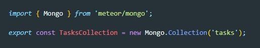
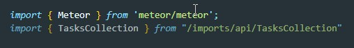
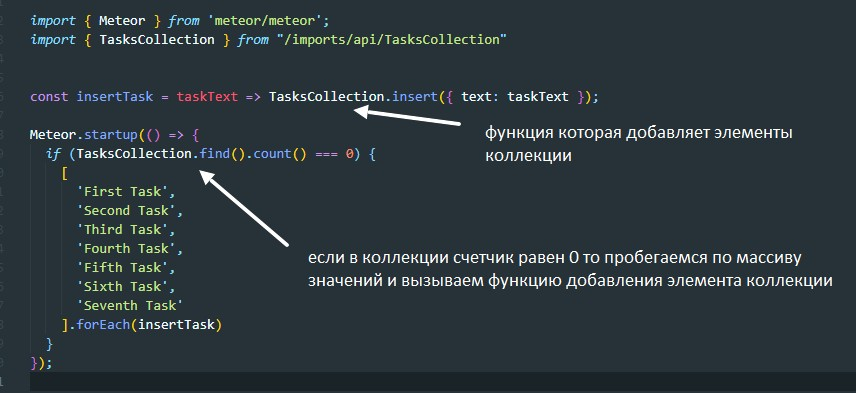
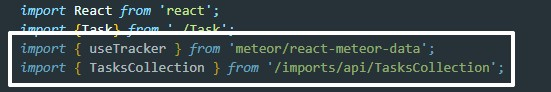
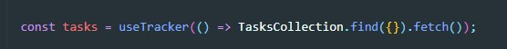
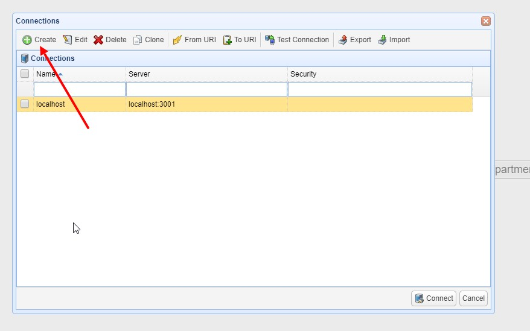
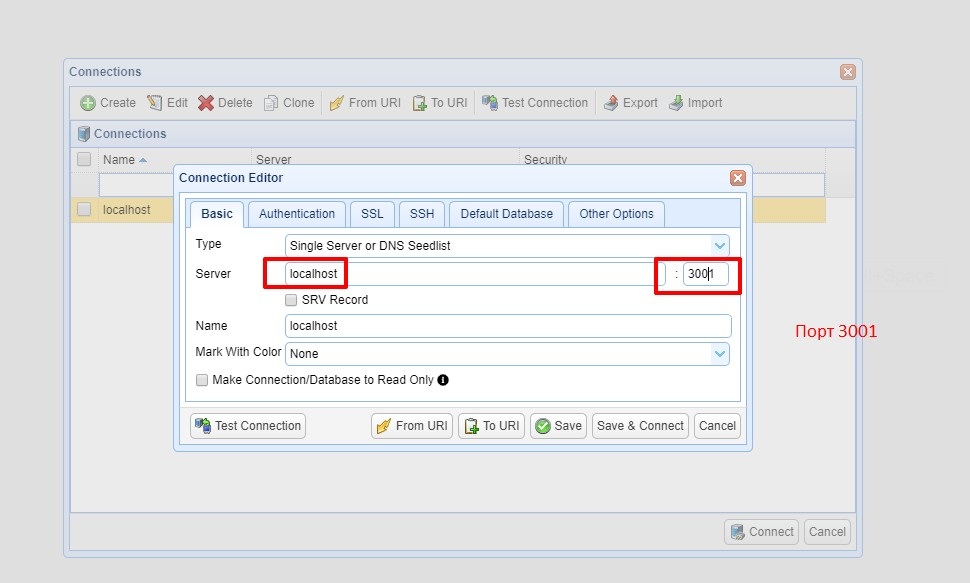
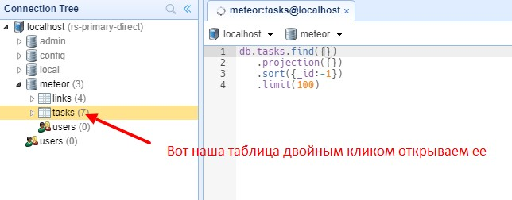

Meteor уже настроил для нас MongoDB. Чтобы использовать нашу базу данных, нам нужно создать коллекцию, в которой мы будем хранить наши документы, в нашем случае наши задачи.
Мы можем создать новую коллекцию для хранения наших задач, создав новый файл в import / api / TasksCollection.js, который создает экземпляр новой коллекции Mongo и экспортирует ее.
Обратите внимание, что мы сохранили файл в каталоге import / api, который является местом для хранения кода, связанного с API, например публикаций и методов. Вы можете назвать эту папку как хотите, это просто выбор.
Чтобы наша коллекция работала, вам нужно импортировать ее на сервер (т.е. в файл server / main.js).
Теперь мы будем проверять, есть ли данные в нашей коллекции , в противном случае мы будем добавлять некоторые образцы данных с помощью метода insert.
Для рендера данных мы будем использовать компонент функции React и хука с именем useTracker из пакета response-meteor-data. При автоматической сборки проекта meteor уже добавляет в node_modules этот пакет, так что нам не придется его устанавливать дополнительно.
При импорте кода из пакета Meteor единственное отличие от модулей NPM состоит в том, что нам нужно добавить meteor / в части from вашего импорта.
Функция useTracker, экспортируемая с помощью response-meteor-data, представляет собой React Hook, который позволяет вам иметь реактивность в ваших компонентах React. Каждый раз, когда данные в коллекции изменяются , ваш компонент будет переррисовываться.
В файлу App.jsx в разделе импортов добавим две строчки:
Здесь мы испортировали коллецию и хук useTracker
Теперь что бы получить данные из коллекции мы вызовем функцию useTracker и в качестве аргумента передадим callback который обратится к коллекции и вызовет методы find и fetch
Данные мы записали в переменную tasks и именно этот массив потом мапим
Важно заметить то что данные в коллекции у MongoDB автоматом получают уникальный идентификатор, получить этот идентификатор можно обратившись к свойству _id элемента коллекции
Мы можем подключиться к своей MongoDB с запуском meteor mongo в терминале из папки приложения или с помощью клиента пользовательского интерфейса Mongo, например NoSQLBooster. Наш встроенный MongoDB работает на порту 3001.
Скачать NoSQLBooster можно здесь здесь
  